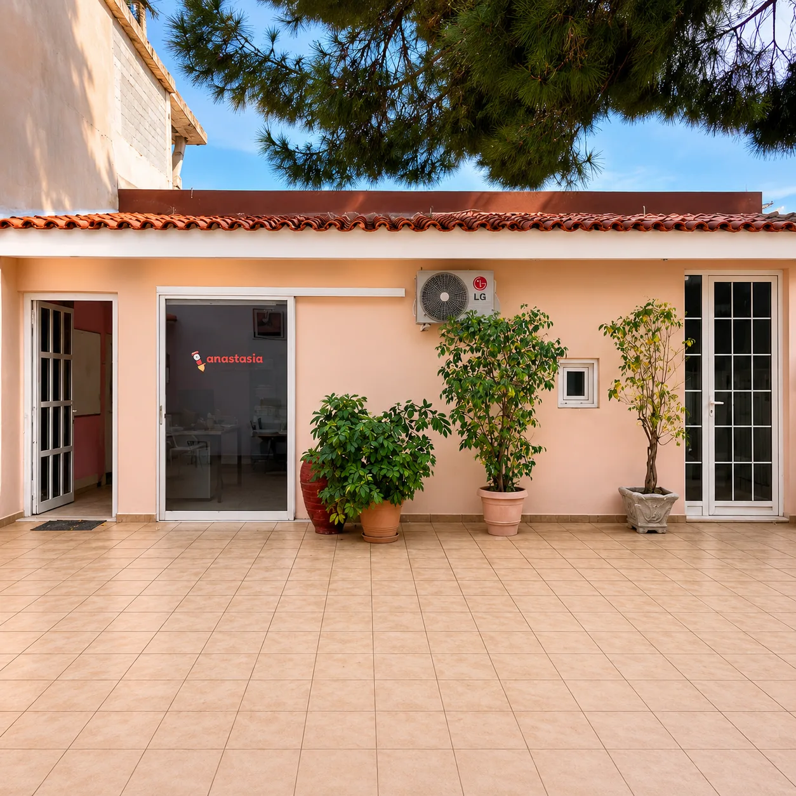

english_school_panagopoulou
Κορωπί, Αττική
Το Φροντιστήριό μαςAbout Us
Η εκπαιδευτική μας πορεία Our educational journey
Μια ιστορία που συνεχίζει να μεγαλώνει.A story that keeps growing.

Η ιστορία μαςOur history
Ξεκινήσαμε το 1988 We started in 1988
Από το 1988 βρισκόμαστε στο Κορωπί, βοηθώντας παιδιά, εφήβους και ενήλικες να χτίσουν τη σχέση τους με την αγγλική γλώσσα.Since 1988 we have been based in Koropi, helping children, teenagers and adults build their relationship with the English language.
Όλα αυτά τα χρόνια, είχαμε τη χαρά να γνωρίσουμε εκατοντάδες μαθητές και να γίνουμε μέρος της εκπαιδευτικής τους πορείας. Σήμερα, συνεχίζουμε με την ίδια αγάπη για τη διδασκαλία και την ίδια προσωπική προσέγγιση που μας χαρακτηρίζει από την πρώτη μέρα.Over all these years, we have had the joy of getting to know hundreds of students and becoming part of their educational journey. Today, we continue with the same love for teaching and the same personal approach that has defined us from day one.
Η καθηγήτριαOur teacher
Αναστασία
Αναστασία
Παναγοπούλου
Αγγλική ΦιλολογίαEnglish Literature degree
Cambridge Proficiency
Η Αναστασία Παναγοπούλου είναι πτυχιούχος Αγγλικής Φιλολογίας και κάτοχος του Proficiency του Πανεπιστημίου του Cambridge.Anastasia Panagopoulou holds a degree in English Literature and a Cambridge Proficiency certificate from the University of Cambridge.
Η πορεία της στην εκπαίδευση ξεκίνησε το 1983, όταν άρχισε να διδάσκει Αγγλικά σε μαθητές στην Αθήνα και το Κορωπί. Με ιδιαίτερη έμφαση στην προετοιμασία για τις εξετάσεις Lower και Proficiency του Cambridge, έχει αφιερώσει περισσότερες από τέσσερις δεκαετίες στη διδασκαλία και την υποστήριξη μαθητών κάθε ηλικίας.Her journey in education began in 1983, when she started teaching English to students in Athens and Koropi. With particular emphasis on preparation for Cambridge Lower and Proficiency exams, she has devoted more than four decades to teaching and supporting students of all ages.
Ο χώρος μαςOur space
Φωτεινή, φιλόξενη τάξηBright, welcoming classroom
Αποστολή & ΑξίεςMission & Values
Αυτό που μας οδηγείWhat drives us
Να δίνουμε σε κάθε μαθητή τις γλωσσικές δεξιότητες και την αυτοπεποίθηση που χρειάζεται για να πετύχει στη ζωή.To give every student the language skills and confidence they need to succeed in life.
ΦροντίδαCare
Κάθε παιδί μετράει.Every child matters.
ΣυνέπειαConsistency
Ίδια ποιότητα, κάθε χρόνο.The same quality, every year.
ΕμπιστοσύνηTrust
Διαφάνεια με γονείς και μαθητές.Transparency with parents and students.
ΑριστείαExcellence
Υψηλοί στόχοι για όλους.High standards for everyone.